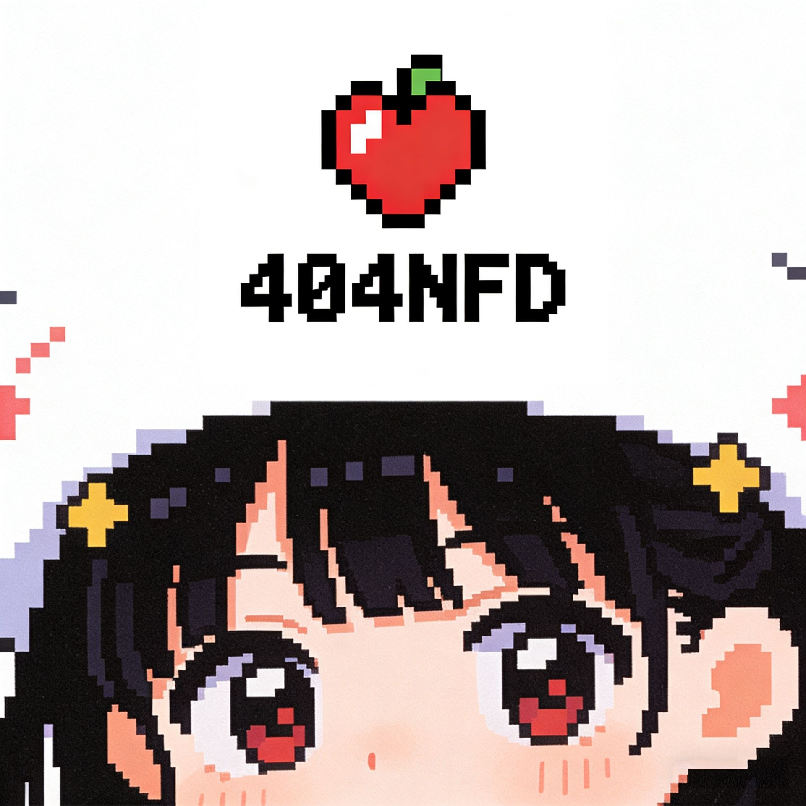

- 参与 CTF 竞赛与训练赛
- 学习 Web、Pwn、Reverse、Crypto、Misc 等方向
- 整理题解、脚本、环境和复盘记录
- 进行校内技术分享与新人训练
PIXEL BERRY RANGE / ANU CTF TEAM
404NFD
一家正在营业的奶粉店。我们在 Web、Pwn、Reverse、Crypto、Misc 里打怪升级，把每次掉线、爆破、绕过和复盘都存进队伍背包。

TEAM HP
WEB +12
PWN +08
REV +09
MISC +10
ABOUT 404NFD
关于我们
404 Not Found? 在 404NFD，找不到的路径会变成下一篇 Writeup。
404NFD 战队成立于 2025 年，是安徽师范大学的一支新生代 CTF 战队。 队名来自 HTTP 状态码 404 Not Found，取 Not Found 的缩写 NFD。因为 NFD 也可以读作“奶粉店”的拼音缩写，所以大家也会叫我们 404 奶粉店。
我们的队标是像素草莓和 404NFD 字标。它代表一点轻松的团队气质，也代表我们希望把复杂、 陌生、看似找不到入口的问题，拆成能复现、能学习、能分享的方法。
- 培养网络安全人才
- 促进技术交流
- 在实战中提升攻防能力
- 把每一次踩坑都沉淀成团队知识
SKILL TREE
方向技能树
CREW ROSTER
战队成员
WRITEUP ARCHIVE
WP 存档
RECRUIT OPEN
来 404NFD 一起开下一局
不要求一开始就很强，只要求愿意长期学习、记录和协作。